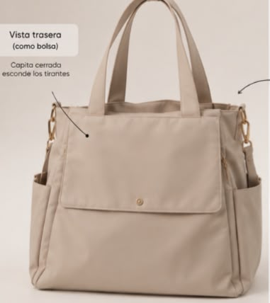

Transición 2-en-1 Fluida
Pasa de bolso tote a mochila anatómica en 3 segundos. Sin desenganchar mosquetones ni enredar correas gracias a su arnés deslizable patentado.
Soma redefine el transporte diario: la elegancia estructurada de una tote urbana unida a la ergonomía, resistencia y distribución de peso de una mochila técnica.

Cada detalle de Soma fue concebido para eliminar la molestia de cambiar de bolso entre tus jornadas de trabajo, viajes de fin de semana y trayectos en movimiento.
Pasa de bolso tote a mochila anatómica en 3 segundos. Sin desenganchar mosquetones ni enredar correas gracias a su arnés deslizable patentado.
Protección perimetral de alta densidad que evita que tu ordenador toque el suelo. Incluye bolsillos para cables, pasaporte y bolsillo oculto antirrobo.
Tejido técnico reciclado repelente a la lluvia y derrames de café. Cremalleras estancas YKK AquaGuard que mantienen tu contenido impecable y seco.
Base acolchada que permite que Soma se mantenga erguida sobre cualquier mesa o suelo de cafetería, evitando caídas accidentales de tus objetos.